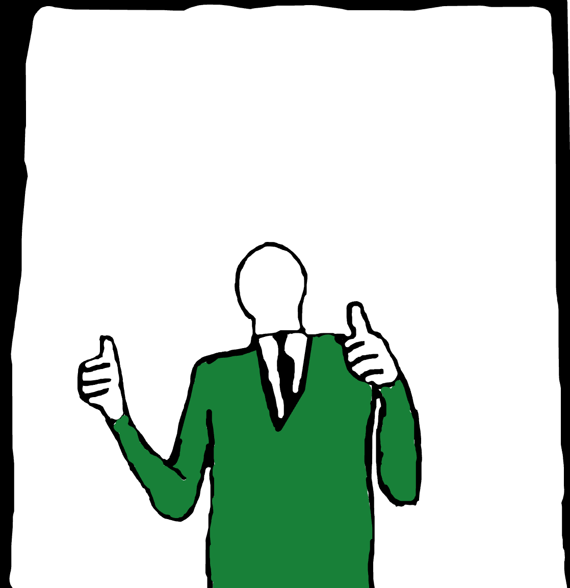

The New Representitive of the Galactic democracy was elected yesterday,

And people are Joyous about his policies. The new rep. Arrown Krownes announced yesterday, October 18 2124, That he would reinstate the Planetary sapience act of 2119 and undo the tyrannical acts by then Galactic Representitive Ordin Maks. The reinstatement would reallow The Native Sapient Species of Junoe, Osseus Sapiens, To Have Rights Similar to that of a human. Some claim that this is unnatural due to the fact that human rights are for humans. Rep. Arrown had this to say:
Human rights should be re-named. Human rights says that we are the most important sapient species. We are not. We are mere specks compared to the universe, but we claim to own it. THIS is unnatural. The way rights work is that people,no matter the politics, the gender, religion, skin color, culure or sexual identity, Have rights in the galalctic democracy. Why are humans the only ones with rights?
Rep. Arrown Krownes, Oct 18 2124
In response to this, A group of Human supremists Had come out and have branded themselves as the Hab group, or the humans are best group. They say that any other species except humans are unfit for rights. This is what their leader says about Rep. Arrown:
Anyone who trusts this man is depraved and is unfit to be called human. This man wears a MASK, But you trust him with the laws of the univers?! DO YOU SEE!? He is a corrupt man and a (censored discriminatory remarks) SYMPATHIZER! The only reason he wanted to be elected is to give our jobs to the (censored discriminatory remarks). He and his (censored discriminatory remarks) WILL TEAR THE GALAXY DOWN!